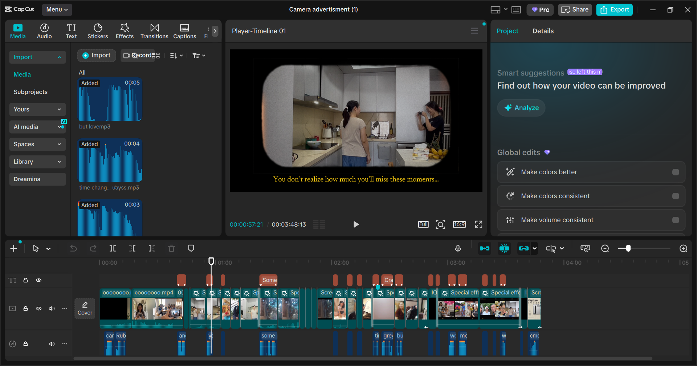
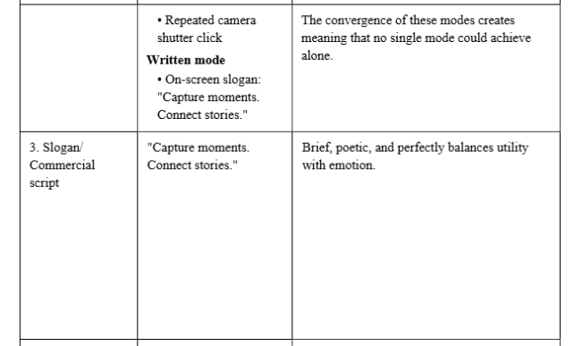
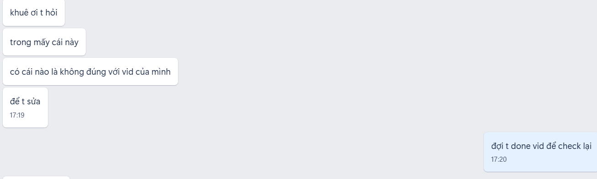
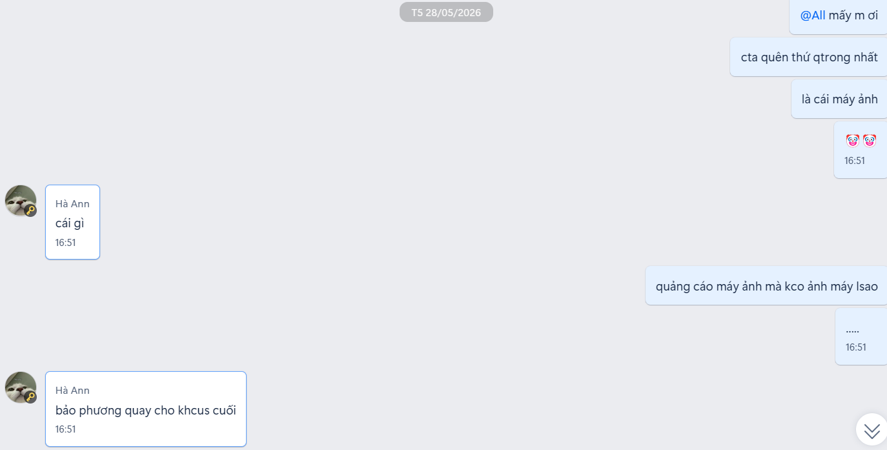

Mục tiêu
Nhóm em cần hoàn thành một dự án quảng cáo cho môn Ngôn ngữ và Truyền thông. Mục tiêu của riêng em là theo sát phần việc cá nhân, cùng sửa nội dung trên tài liệu chung và giữ cho các tệp video, nhận xét, phiên bản chỉnh sửa không bị thất lạc.
Quá trình thực hiện
Chia công cụ theo đúng việc
Em dùng Apple Reminders để theo dõi deadline trên điện thoại và iPad. Nhóm viết chung bằng Google Docs, dựng video trong CapCut Space, lưu tệp ở Google Drive và trao đổi nhanh qua Zalo. Nhờ tách vai trò như vậy, em biết cần tìm thông tin ở đâu thay vì dồn mọi thứ vào nhóm chat.

Hoàn thành phần việc cá nhân
Em tham gia làm video quảng cáo trên CapCut và hoàn thành các phần đánh giá Product, Slogan, Multimodality trong Google Docs. Nội dung được viết trực tiếp trên tài liệu chung để cả nhóm nhìn thấy thay đổi và góp ý vào cùng một phiên bản.


Gỡ vướng khi làm nhóm
Khó nhất là phản hồi chậm và góp ý bị rải ở nhiều tin nhắn. Nhóm thống nhất deadline phản hồi, gom nhận xét trước khi gửi và sửa trực tiếp trên tài liệu chung. Khi mỗi người muốn trình bày theo một cách khác, cả nhóm trao đổi rồi chọn phương án theo đa số. Cách này không xóa hết bất đồng nhưng giúp công việc tiếp tục chạy.


Điều em học được
Công cụ không tự làm cho nhóm phối hợp tốt hơn. Điều giúp nhóm em bớt rối là quy ước rõ: việc có deadline nằm trong Reminders, bản đang sửa nằm trên Docs, còn Drive là nơi giữ sản phẩm. Em cũng học được rằng một lần góp ý đầy đủ dễ xử lý hơn nhiều tin nhắn ngắt quãng.